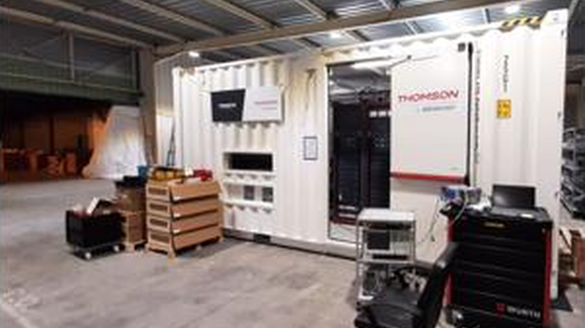

Factory & presence
Engineering, manufacturing and integration backed by international experience.
Manufacturing visuals, project imagery and international references support confidence for broadcasters, ministries and private media operators planning long-term technical investment.
Manufacturing imagery
Factory floor, integration lab and containerized systems imagery integrated across the site.
International reach
Project references and global presence demonstrate delivery capability across multiple markets.
Project execution
Structured engineering, integration and commissioning workflows help move projects from concept to operation.
Lead conversion
Dedicated contact pathway through email and contact form entry points.

